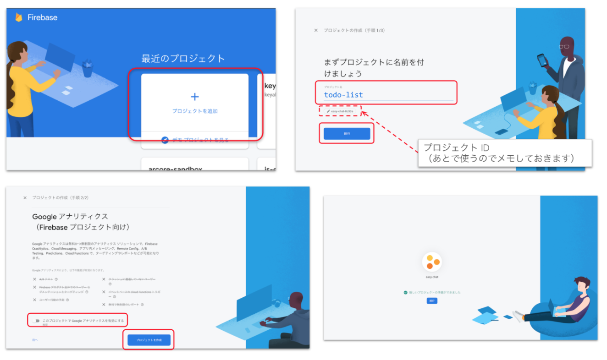

このハンズオンでは、Firebase で簡単なWebチャットサービスをつくります。
サンプルアプリ :
https://easy-chat-a71d8.web.app/
What you'll learn
- Firebaseとは何かを学ぶ
- Firebaseの使い方を学ぶ
- 作成したアプリを全世界に公開する
ソースコードの準備
下のボタンから Cloud Shell を開きます。

ディレクトリ構成はこんな感じです。
easy-chat/
├── firebase.json
├── images
│ ├── firebase-icon-192x192.png
│ ├── firebase-icon-48x48.png
│ ├── firebase-icon-96x96.png
│ ├── firebase-logo.png
│ └── profile_placeholder.png
├── index.html
├── LICENSE
├── login.html
├── manifest.json
├── manifest.webapp
├── README.md
├── scripts
│ ├── login.js
│ └── main.js
└── styles
└── main.css
名前
渡辺 友康(kappa0923)
普段は
- GCP, AWSのArchitect
- AWS認定ソリューションアーキテクト
コミュニティも色々
- GDG Tokyo (https://gdg-tokyo.connpass.com/)
- Firebase Japan User Group (https://firebase-community.connpass.com/)
- Marking Cloud (https://markingcloud.connpass.com/)
概要
アプリ開発のためのクラウド mBaaS (mobile Backend as a Service)
- アプリ開発に必要な機能（DB, Storage, etc.）
- インフラ周りの構築、メンテナンスが不要
- 2014年に Google が買収し、GCP の一部に
- 無料枠が大きい
アーキテクチャ概要図
- ClientがブラウザでHostingにアクセスし、Webチャットアプリを表示
- Firestoreにチャットデータを保存&読み込み
- 書き込むユーザーを制限するため、Authenticationでログイン機能の実装
コードの記述やデプロイ作業は全てCloud Shellから実行します
プロジェクトの作成
Firebaseのコンソールを開き、「プロジェクトを追加」を選択。
好きなプロジェクト名を入力して「続行」を選択。
Google アナリティクスは無効にして「作成」。

Firebase プロジェクトを紐付け
Cloud Shell で以下のコマンドを実行します。
CloudShell
firebase login --no-localhost --reauth
Firebaseプロジェクトを作成したアカウントでログインし、表示されるトークンをCloudShellにペーストして、CloudShellとFirebaseプロジェクトの紐付け完了です。

次のコマンドで作成したプロジェクトを設定します。
CloudShell
firebase use <PROJECT_ID> // <PROJECT_ID>はさっきメモしたものに書き換えます
プロジェクトIDは「プロジェクトを設定」から再確認できます。

以下の確認コマンドで正しいプロジェクトに (current) とついていればOKです。
CloudShell
firebase projects:list

Firebaseではアプリという単位でリソースを管理します。
Firebaseコンソールからアプリを追加
コンソールトップ画面のwebマーク(</>)を選択してアプリを追加。
- 任意のアプリのニックネームを設定
- 「このアプリの Firebase Hosting も設定します。」にチェック
- アプリを登録を選択
- ②③④は事前に準備済みなので何もせず「次へ」


CloudShell で以下のコマンドを実行します。
CloudShell
firebase serve --only hosting --port 8080

出力されたURLをクリックしてこんな画面が表示されたらOK。(まだチャットはできない)
メッセージ送信処理
メッセージを入力して送信したときの処理を実装します。
scripts/main.jsを開きます。saveMessage(e)という関数を見つけます。- 関数全体を次のコードに置き換えます。
main.js
// Saves a new message on the Firestore.
saveMessage(e) {
e.preventDefault();
if (this.messageInput.value) {
var date = new Date();
this.displayMessage(date.getTime(), 'User Name', this.messageInput.value, 'images/profile_placeholder.png');
}
}修正が完了したらコードを保存して、アプリをリロードします。
メッセージの送信を試す
アプリでメッセージを入力して「SEND」を押すとメッセージがチャット部に表示されます。
Firestoreに保存する処理をまだ実装していないため、ブラウザをリロードするとメッセージが消えてしまいます。
メッセージを保存するためにFirestoreの設定を行います。
FirebaseコンソールからFirestoreを有効化します。
- 左側のメニューから「Database」を選択します。
- 中央に表示される「データベースの作成」を選択します。
- セキュリティルールは「テストモード」を選択します。
- リージョンは「asia-northeast1」を選択します。

仮データをFirestoreに作成します。
Firestoreのセットアップが完了したら、チャットに表示するためのメッセージを作成します。
- 「コレクションを開始」を選択します。
- コレクションIDに
messagesを入力します。 - ドキュメントIDは「自動ID」を選択します。
- 画像のように
message, name, photoURL, timestampを入力します。 - 入力できたら「保存」を選択し、Firestoreにデータを保存します。
保存されたときのイメージ
作成したデータをFirestoreから読み込むための処理を実装します。
scripts/main.jsを開きます。loadMessages()という関数を見つけます。- 関数全体を次のコードに置き換えます。
main.js
// Loads chat messages history and listens for upcoming ones.
loadMessages() {
// Firestoreからメッセージを１度だけ読み込み
this.firestore.collection('messages')
.orderBy('timestamp')
.get()
.then((querySnapshot) => {
querySnapshot.forEach((doc) => {
this.displayMessage(doc.id, doc.data().name, doc.data().message, 'images/profile_placeholder.png')
});
})
}修正が完了したらコードを保存して、アプリをリロードします。
先ほどFirestoreに保存したデータがチャットに表示されるようになりました！
書き込んだメッセージを永続的なものとするため、Firestoreへ書き込む処理を実装します。
scripts/main.jsを開きます。saveMessage()という関数を見つけます。- 関数全体を次のコードに置き換えます。
main.js
// Saves a new message on the Firestore.
saveMessage(e) {
// メッセージをFirestoreへ保存する処理
if (this.messageInput.value) {
this.firestore.collection('messages').add({
name: "User Name",
message: this.messageInput.value,
photoURL: '/images/profile_placeholder.png',
timestamp: new Date()
})
.catch(function(error) {
console.error("Error adding document: ", error);
});
this.resetMaterialTextfield(this.messageInput);
this.toggleButton();
}
}修正が完了したらコードを保存して、アプリをリロードします。
メッセージを書き込んだ後にアプリをリロードすると、書き込んだメッセージが表示されるようになりました！
FirebaseコンソールからFirestoreを確認すると、データが書き込まれていることを確認できます。
書き込んだメッセージをリアルタイムにアプリに反映するため、リアルタイム処理を実装します。
scripts/main.jsを開きます。initFirebase()という関数を見つけます。- 関数全体を次のコードに置き換えます。
this.loadMessages();が不要になったのでコメントアウトします。
main.js
// Sets up Firebase features.
initFirebase() {
// Firestoreを使うための初期化処理
this.firestore = firebase.firestore();
// Firestoreからリアルタイムに読み込むための処理
var that = this;
this.firestore.collection('messages')
.orderBy('timestamp')
.onSnapshot(function(querySnapshot) {
querySnapshot.docChanges().forEach(function(change) {
if (change.type === "added") {
that.displayMessage(change.doc.id, change.doc.data().name, change.doc.data().message, change.doc.data().photoURL)
}
});
});
};修正が完了したらコードを保存して、アプリをリロードします。
メッセージを書き込むとリアルタイムで表示に反映されるようになりました！
アプリをインターネットに公開し、誰でもアクセスできるようにするため、Firebase Hosting にデプロイします。
CloudShell
firebase deploy --only hosting

自動的に URL が振られ、どこからでもアクセス可能！
- Hosting URL: に表示されている URL にアクセスすると、作成したアプリが表示されます。
- インターネットに公開されているので、他の端末からもアクセスできます！
ここからは更にAdvancedな内容になります。
ここまでの動作を理解し、更に発展的な内容を学習したい人のみチャレンジしてください。
いまのWebチャットアプリは誰でも匿名で書き込むことができるようになっています。
しかし、実際にアプリを公開していくことを考えると、ログイン機能が欲しくなってきますね。
そこで、Firebase Authenticationを使ってログイン機能を実装していきます。
FirebaseコンソールからAuthenticationを有効化
まずはログインプロバイダとしてGoogleを使えるようにします。
- FirebaseコンソールのメニューからAuthenticationを選択します。
- 「ログイン方法を設定」を選択します。
- ログインプロバイダから「Google」を選択します。
- 「有効にする」のスイッチを有効化し、「保存」を選択します。
Firebase Authentication初期化の実装
Firebase Authenticationの機能を使えるようにするため、初期化処理を実装します。
scripts/main.jsを開きます。initAuth()という関数を見つけます。- 関数全体を次のコードに置き換えます。
main.js
// Sets up Firebase Authentication.
initAuth() {
// Firebase Authの初期化処理
this.auth = firebase.auth();
this.auth.onAuthStateChanged(this.onAuthStateChanged.bind(this));
}認証後の初回メッセージ読み込みの実装
Firebase Authenticationのでログイン後、初回のメッセージ読み込み処理を実装します。
scripts/main.jsを開きます。loadMessages()という関数を見つけます。- 関数全体を次のコードに置き換えます。
main.js
// Loads chat messages history and listens for upcoming ones.
loadMessages() {
// 初回メッセージ読み込み(認証後)
this.firestore.collection('messages')
.orderBy('timestamp')
.get()
.then((querySnapshot) => {
querySnapshot.forEach((doc) => {
this.displayMessage(doc.id, doc.data().name, doc.data().message, doc.data().photoURL)
});
})
};メッセージ送信時のログインチェックの実装
ログイン済みのユーザーのみメッセージを送信できるように処理を実装します。
scripts/main.jsを開きます。saveMessage()という関数を見つけます。- 関数全体を次のコードに置き換えます。
main.js
// Saves a new message on the Firestore.
saveMessage(e) {
e.preventDefault();
// メッセージ読み込み時の認証チェックを追加
if (this.messageInput.value && this.checkSignedInWithMessage()) {
this.firestore.collection('messages').add({
name: this.auth.currentUser.displayName,
message: this.messageInput.value,
photoURL: this.auth.currentUser.photoURL || '/images/profile_placeholder.png',
timestamp: new Date()
})
.catch(function(error) {
console.error("Error adding document: ", error);
});
this.resetMaterialTextfield(this.messageInput);
this.toggleButton();
}
};動作確認
Webチャットアプリにログイン機能が実装されました！
再デプロイ後、実際にログインして動作を確認してみましょう！
CloudShell
firebase deploy --only hosting
ちゃんと実装できているとログイン画面が表示されるようになります。
Firebaseを使ってログイン機能つきのWebチャットアプリを作成することができました！
複雑そうな処理もFirebaseを使えば簡単に実装できることが実感できたかと思います。
ここから先は各自、思い思いに改良してみてください。
アンケート
最後にアンケートがありますので、より良い勉強会作りのためにご協力お願い致します。